Greetings!
Nice to meet you, I'm Ayush! I'm currently a fourth year at UC Berkeley, where I'm taking classes and participating in clubs on campus. You can learn more about me at my About page.
Previous work positions I've held include the following:


Head TA of Machine Architecture
Research Assistant
Research Assistant
EECS Dept. @ UC Berkeley
Dept. of Pomology @ UC Davis
Stanford School of Medicine
Some fun facts:
- Black belt in Taekwondo
- Played the French Horn
- Been skydiving
- Fastest I've spoken: 512 wpm
If you ever want to reach out or check out some of my stuff, check out these links to get in touch: